In trigonometry, there are three functions. Sine, Cosine, and Tangent. Triangles can be solved mainly with the first two functions which are Sine and Cosine.
In trigonometry, triangles are often noted by the known sides and angles. There are six types of triangles that can appear in a math problem, SSS, SSA, SAS, ASA, AAS, AAA.
An SSS (also known as a Side Side Side) Triangle is a triangle with three sides and zero angles known as this triangle…
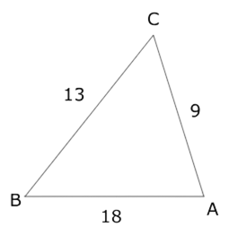
Typically a math problem for a SSS triangle is to find all the missing angles in the triangle. In this case we use the angle version of the law of cosines formula…
Let's say we want to solve ∠a first. We just plug in all the side lengths into the formula…
Then to find the angle, we use arc cosine which is basically the inverse of cosine and replace it with cos(A)...
Now by using a calculator, the arc cosine of 0.88 is 0.49. But this answer is in radians which is approximately 57.3. So we must multiply 0.49 with 57.3…
So ∠A is 87.1 degrees…
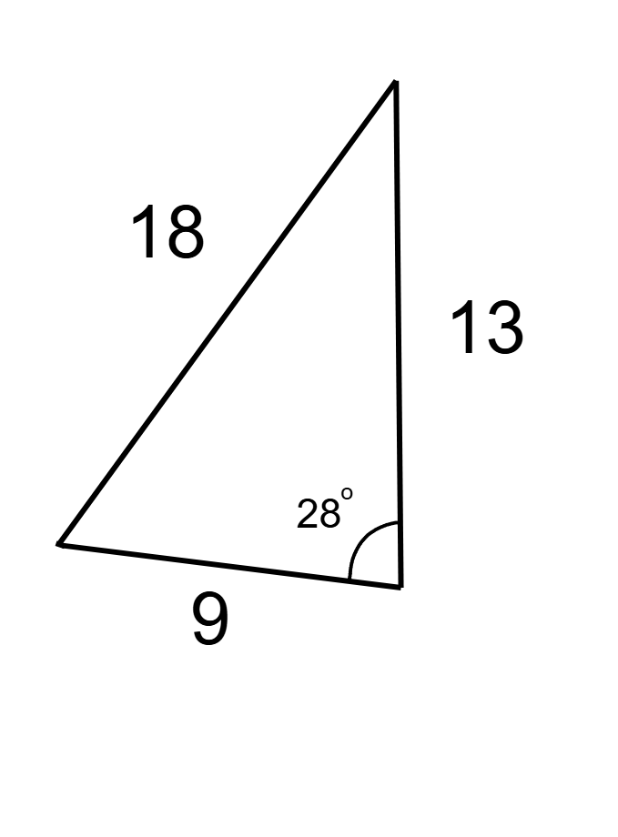
We can use the angle form of the law of cosines formula to find the remaining two unknown angles…
Now by using a calculator, the arc cosine of 0.0534 is 1.52. But this answer is in radians which is approximately 57.3. So we must multiply 1.52 with 57.3…
∠B is 45.2° which can give us the final angle since a triangles interior angles adds up to 180…
So the angles are 108.426°, 45.26°, and 28.077°…
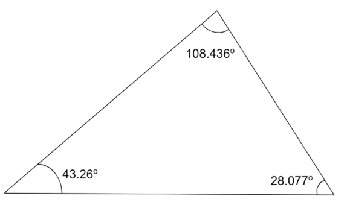
So basically you use the angle version of the law of cosines formula to find the angles for a Side Side Side triangle.
An SSA triangle is a triangle that has two sides and an angle NOT IN BETWEEN the sides known…
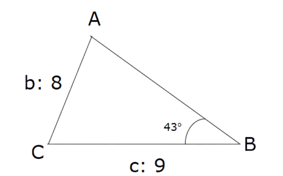
Take note that the angle in this triangle isn’t in between side B and C. A common problem would be to solve the whole triangle. To do this we would have to use The Law of Sines to complete the triangle…
So we take ∠B and side b to find ∠C…
Next we multiply both sides by 9…
Next we use the inverse of arcsin of what Sin(C) is equal to…
So ∠C is 50.1°…
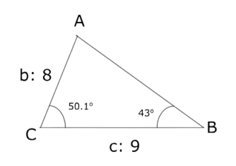
And we can subtract 180 by the sum of the two angles to find the third angle…
So ∠A is 86.9°…
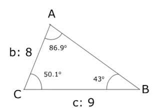
We can also find side a by doing the opposite of what we just did to find the angles…
The SSA triangle is complete but that doesn’t mean that all SSA triangles are solved this way. When an SSA triangle has one, two or no solutions. This is called an ambiguous case. It is caused through acute triangles having an alternate obtuse triangle. So by looking back at when we calculated the arcsin of ∠C, we can subtract 180 by it to find the other alternate angles…
So ∠C can be 129.9°. And by subtracting both 129.9° and ∠B which is 43°, we can find ∠A…
So ∠A can be 7.1°…
And side a can be solved again…
So side a is 1.45…
SAS triangles are triangles with two sides and an angle in between of the sides are known like this example…
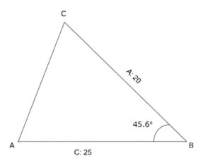
In this example sides a, c and angle B are known. To find out the unknown side’s length (in this example side b is known) we use The Law of Cosines…
Side b is 18.038…
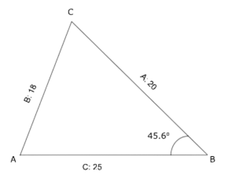
Next we use The Law of Sines to find the remaining two unknown angles…
So angle A is 52.544 degrees, and angle B is 81.856 degrees…
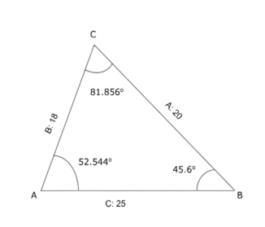
ASA triangles are triangles that have two angles and a side in between known…
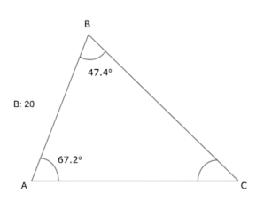
The first step is to find the angle of C through subtraction of 180 with both of the known angles…
Angle C is 65.4 degrees…
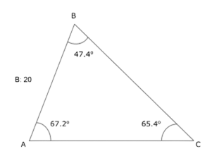
Then we solve for all the sides using The Law of Sines…
Side a is 25.047 while side c is 24.704…
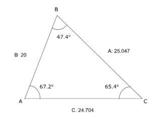
AAS triangles are triangles with two angles and a side not in between known…
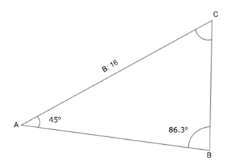
First we find the third, unknown angle…
Angle C is 48.7 degrees…
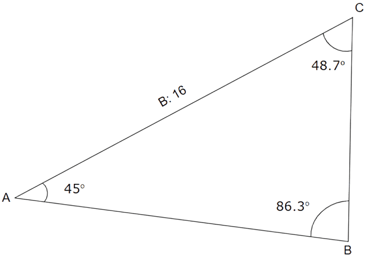
Next use the Law of Cosines to find the two remaining unknown sides…
Side a is 11.337 and side c is 12.045…
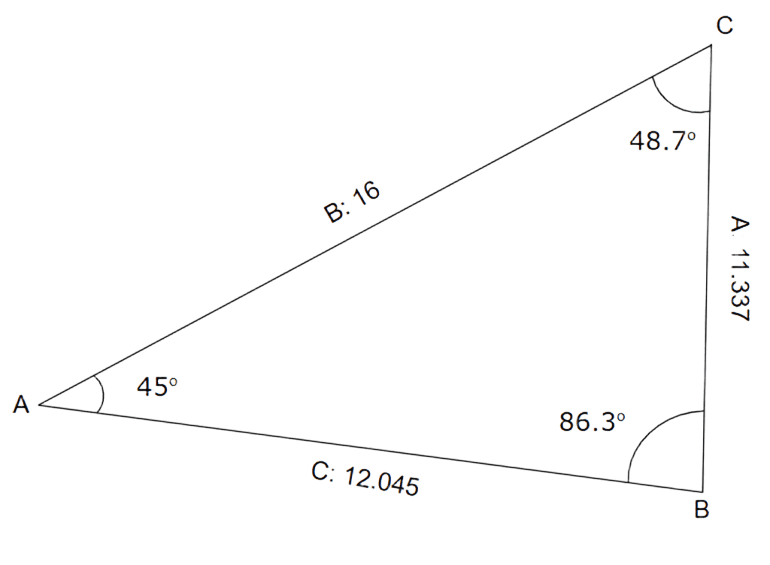
The triangle is now complete.
Angle Angle Angle Triangles are triangles that have three angles known…
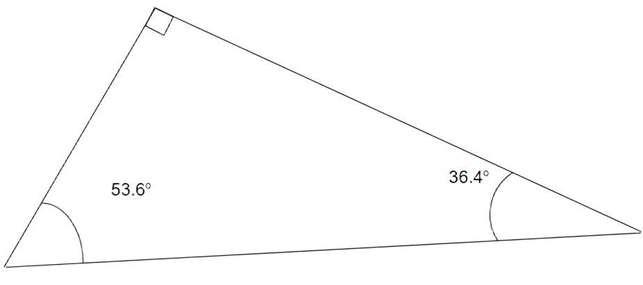
AAA triangles like this example aren’t solvable since no side is known which means that the Law of Cosines and Law of Sines cannot work.